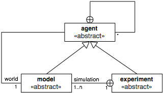

Introduction
GAML is an agent-oriented language dedicated to the definition of agent-based simulations. It takes its roots in object-oriented languages like Java or Smalltalk, but extends the object-oriented programming approach with powerful concepts (like skills, declarative definitions or agent migration) to allow for a better expressivity in models.
It is of course very close to agent_based modeling languages like, e.g., NetLogo, but, in addition to enriching the traditional representation of agents with modern computing notions like inheritance, type safety or multi-level agency, and providing the possibility to use different behavioral architectures for programming agents, GAML extends the agent-based paradigm to eliminate the boundaries between the domain of a model (which, in ABM, is represented with agents) and the experimental processes surrounding its simulations (which are usually not represented with agents), including, for example, visualization processes. This paper (Drogoul A., Vanbergue D., Meurisse T., Multi-Agent Based Simulation: Where are the Agents ?, Multi-Agent Based Simulation 3, pp. 1-15, LNCS, Springer-Verlag. 2003) was in particular foundational in the definition of the concepts on which GAMA (and GAML) are based today.
This orientation has several conceptual consequences among which at least two are of immediate practical interest for modelers:
- Since simulations, or experiments, are represented by agents, GAMA is bound to support high-level model compositionality, i.e. the definition of models that can use other models as inner agents, leveraging multi-modeling or multi-paradigm modeling as particular cases of composition.
- The visualization of models can be expressed by models of visualization, composed of agents entirely dedicated to visually represent other agents, allowing for a clear separation of concerns between a simulation and its representation and, hence, the possibility to play with multiple representations of the same model at once.
Table of contents
Lexical semantics of GAML
The vocabulary of GAML is described in the following sentences, in which the meaning and relationships of the important words of the language (in bold face) are summarized.
- The role of GAML is to support modelers in writing models, which are specifications of simulations that can be executed and controlled during experiments, themselves specified by experiment plans.
- The agent-oriented modeling paradigm means that everything “active” (entities of a model, systems, processes, activities, like simulations and experiments) can be represented in GAML as an agent (which can be thought of as a computational component owning its own data and executing its own behavior, alone or in interaction with other agents).
- Like in the object-oriented paradigm, where the notion of class is used to supply a specification for objects, agents in GAML are specified by their species, which provide them with a set of attributes (what they know), actions (what they can do), behaviors (what they actually do) and also specifies properties of their population, for instance its topology (how they are connected) or schedule (in which order and when they should execute).
- Any species can be nested in another species (called its macro-species), in which case the populations of its instances will imperatively be hosted by an instance of this macro-species. A species can also inherit its properties from another species (called its parent species), creating a relationship similar to specialization in object-oriented design. In addition to this, species can be constructed in a compositional way with the notion of skills, bundles of attributes and actions that can be shared between different species and inherited by their children.
- Given that all agents are specified by a species, simulations and experiments are then instances of two species which are, respectively, called model and experiment plan. Think of them as “specialized” categories of species.
- The relationships between species, models and experiment plans are codified in the meta-model of GAML in the form of a framework composed of three abstract species respectively called agent (direct or indirect parent of all species), model (parent of all species that define a model) and experiment (parent of all species that define an experiment plan). In this meta-model, instances of the children of agent know the instance of the child of model in which they are hosted as their world, while the instance of experiment plan identifies the same agent as one of the simulations it is in charge of. The following diagram summarizes this framework:

Putting this all together, writing a model in GAML then consists in defining a species which inherits from model, in which other species, inheriting (directly or not) from agent and representing the entities that populate this model, will be nested, and which is itself nested in one or several experiment plans among which a user will be able to choose which experiment he/she wants to execute.

At the operational level, i.e. when running an experiment in GAMA,
Translation into a concrete syntax
The concepts presented above are expressed in GAML using a syntax which bears resemblances with mainstream programming languages like Java, while reusing some structures from Smalltalk (namely, the syntax of facets or the infix notation of operators). While this syntax is fully described in the subsequent sections of the documentation, we summarize here the meaning of its most prominent structures and their correspondance (when it exists) with the ones used in Java and NetLogo.
- A model is composed of a header, in which it can refer to other models, and a sequence of species and experiments declarations, in the form of special declarative statements of the language.
- A statement can be either a declaration or a command. It is always composed of a keyword followed by an optional expression, followed by a sequence of facets, each of them composed of a keyword (terminated by a ‘:’) and an expression.
- facets allow to pass arguments to statements. Their value is an expression of a given type. An expression can be a literary constant, the name of an attribute, variable or pseudo-variable, the name of a unit or constant of the language, or the application of an operator.
- A type can be a primitive type, a species type or a parametric type (i.e. a composition of types).
- Some statements can include sub-statements in a block (sequence of statements enclosed in curly brackets).
- declarative statements support the definition of special constructs of the language: for instance, species (including global and experiment species), attributes, actions, behaviors, aspects, variables, parameters and outputs of experiments.
- imperative statements that execute something or control the flow of execution of actions, behaviors and aspects are called commands.
- A species declaration (global, species or grid keywords) can only include 6 types of declarative statements : attributes, actions, behaviors, aspects, equations and (nested) species. In addition, experiment species allow to declare parameters, outputs and batch methods.
Vocabulary correspondance with the object-oriented paradigm as in Java
| GAML | Java |
|:–|:–|
| species | class |
| micro-species | nested class |
| parent species | superclass |
| child species | subclass |
| model | program |
| experiment | (main) class |
| agent | object |
| attribute | member |
| action | method |
| behavior | collection of methods |
| aspect | collection of methods, mixed with the behavior |
| skill | interface (on steroids) |
| statement | statement |
| type | type |
| parametric type | generics |
Vocabulary correspondance with the agent-based paradigm as in NetLogo
| GAML | NetLogo |
|:–|:–|
| species | breed |
| micro-species | - |
| parent species | - |
| child species | - (only from ‘turtle’) |
| model | model |
| experiment | observer |
| agent | turtle/observer |
| attribute | ‘breed’-own |
| action | global function applied only to one breed |
| behavior | collection of global functions applied to one breed |
| aspect | only one, mixed with the behavior |
| skill | - |
| statement | primitive |
| type | type |
| parametric type | - |